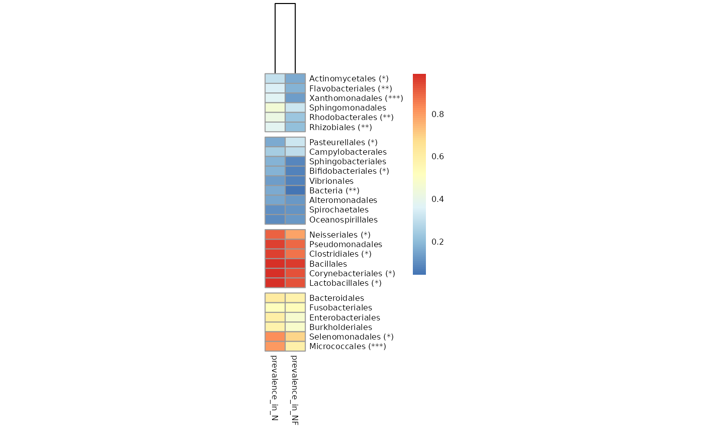

Return a heatmap of prevalence of taxa in groups of samples
Source:R/plotters.R
tacoplot_prevalences.RdReturn a heatmap of all taxa above a certain threshold prevalence per condition, clusters them and compares prevalences with a fisher_test.
Arguments
- ta
A tidytacos object.
- condition
The row name of the condition which rrevalences are to be compared.
- cutoff
The minimum prevalence of a taxon to be included in the heatmap.
- fisher
Run a fisher test on the relative prevalences in each condition and plot the resulting adjusted p-values as *(<.05), **(<.01), ***(<.001) or ****(<.0001).
- adjp_method
The method to adjust the p-values, see
rstatix::adjust_pvalue().- ...
Arguments passed on to
pheatmap::pheatmapmatnumeric matrix of the values to be plotted.
colorvector of colors used in heatmap.
kmeans_kthe number of kmeans clusters to make, if we want to aggregate the rows before drawing heatmap. If NA then the rows are not aggregated.
breaksa sequence of numbers that covers the range of values in mat and is one element longer than color vector. Used for mapping values to colors. Useful, if needed to map certain values to certain colors, to certain values. If value is NA then the breaks are calculated automatically. When breaks do not cover the range of values, then any value larger than
max(breaks)will have the largest color and any value lower thanmin(breaks)will get the lowest color.border_colorcolor of cell borders on heatmap, use NA if no border should be drawn.
cellwidthindividual cell width in points. If left as NA, then the values depend on the size of plotting window.
cellheightindividual cell height in points. If left as NA, then the values depend on the size of plotting window.
scalecharacter indicating if the values should be centered and scaled in either the row direction or the column direction, or none. Corresponding values are
"row","column"and"none"cluster_rowsboolean values determining if rows should be clustered or
hclustobject,cluster_colsboolean values determining if columns should be clustered or
hclustobject.clustering_distance_rowsdistance measure used in clustering rows. Possible values are
"correlation"for Pearson correlation and all the distances supported bydist, such as"euclidean", etc. If the value is none of the above it is assumed that a distance matrix is provided.clustering_distance_colsdistance measure used in clustering columns. Possible values the same as for clustering_distance_rows.
clustering_methodclustering method used. Accepts the same values as
hclust.clustering_callbackcallback function to modify the clustering. Is called with two parameters: original
hclustobject and the matrix used for clustering. Must return ahclustobject.cutree_rowsnumber of clusters the rows are divided into, based on the hierarchical clustering (using cutree), if rows are not clustered, the argument is ignored
cutree_colssimilar to
cutree_rows, but for columnstreeheight_rowthe height of a tree for rows, if these are clustered. Default value 50 points.
treeheight_colthe height of a tree for columns, if these are clustered. Default value 50 points.
legendlogical to determine if legend should be drawn or not.
legend_breaksvector of breakpoints for the legend.
legend_labelsvector of labels for the
legend_breaks.annotation_rowdata frame that specifies the annotations shown on left side of the heatmap. Each row defines the features for a specific row. The rows in the data and in the annotation are matched using corresponding row names. Note that color schemes takes into account if variable is continuous or discrete.
annotation_colsimilar to annotation_row, but for columns.
annotationdeprecated parameter that currently sets the annotation_col if it is missing
annotation_colorslist for specifying annotation_row and annotation_col track colors manually. It is possible to define the colors for only some of the features. Check examples for details.
annotation_legendboolean value showing if the legend for annotation tracks should be drawn.
annotation_names_rowboolean value showing if the names for row annotation tracks should be drawn.
annotation_names_colboolean value showing if the names for column annotation tracks should be drawn.
drop_levelslogical to determine if unused levels are also shown in the legend
show_rownamesboolean specifying if column names are be shown.
show_colnamesboolean specifying if column names are be shown.
mainthe title of the plot
fontsizebase fontsize for the plot
fontsize_rowfontsize for rownames (Default: fontsize)
fontsize_colfontsize for colnames (Default: fontsize)
angle_colangle of the column labels, right now one can choose only from few predefined options (0, 45, 90, 270 and 315)
display_numberslogical determining if the numeric values are also printed to the cells. If this is a matrix (with same dimensions as original matrix), the contents of the matrix are shown instead of original values.
number_formatformat strings (C printf style) of the numbers shown in cells. For example "
%.2f" shows 2 decimal places and "%.1e" shows exponential notation (see more insprintf).number_colorcolor of the text
fontsize_numberfontsize of the numbers displayed in cells
gaps_rowvector of row indices that show where to put gaps into heatmap. Used only if the rows are not clustered. See
cutree_rowto see how to introduce gaps to clustered rows.gaps_colsimilar to gaps_row, but for columns.
labels_rowcustom labels for rows that are used instead of rownames.
labels_colsimilar to labels_row, but for columns.
filenamefile path where to save the picture. Filetype is decided by the extension in the path. Currently following formats are supported: png, pdf, tiff, bmp, jpeg. Even if the plot does not fit into the plotting window, the file size is calculated so that the plot would fit there, unless specified otherwise.
widthmanual option for determining the output file width in inches.
heightmanual option for determining the output file height in inches.
silentdo not draw the plot (useful when using the gtable output)
na_colspecify the color of the NA cell in the matrix.
Examples
urt %>%
aggregate_taxa(rank = "order") %>%
tacoplot_prevalences(location, cutoff = .1,
treeheight_row = 0, cutree_rows = 4,
fontsize = 6, cellwidth = 15)
